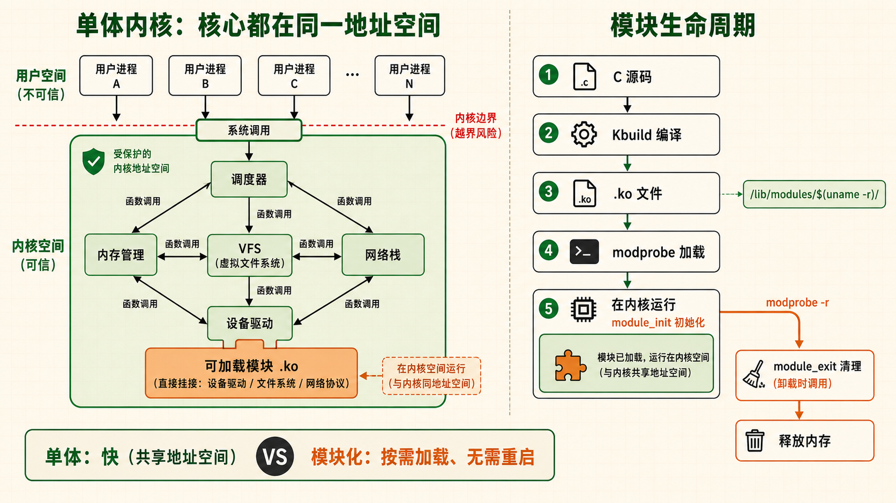
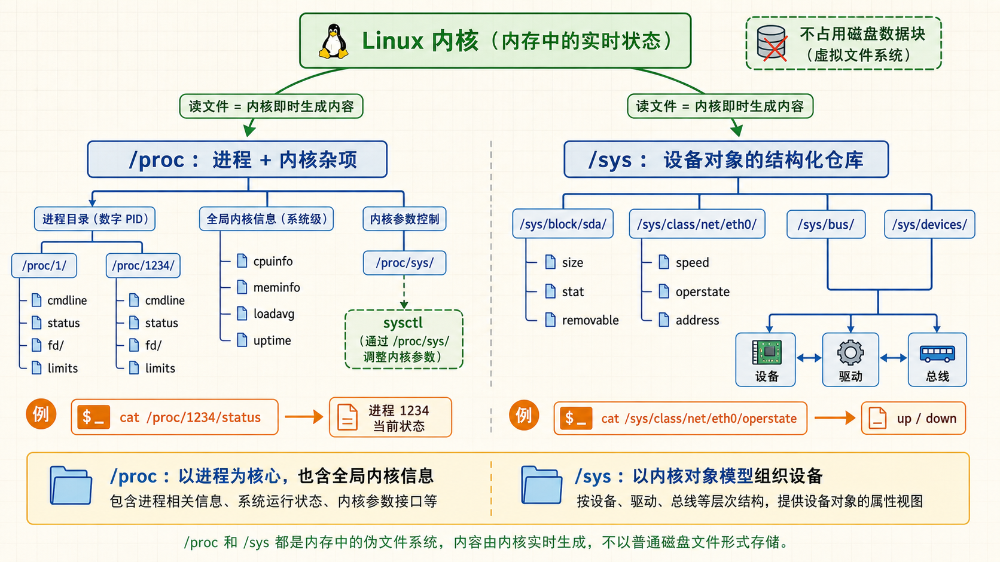
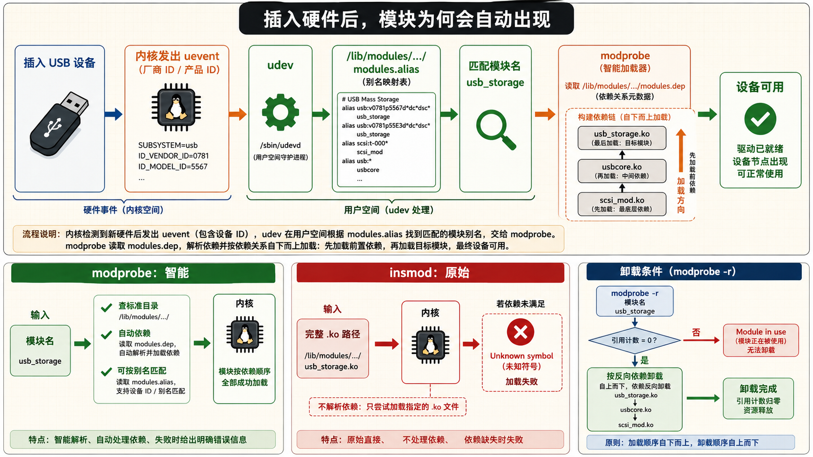
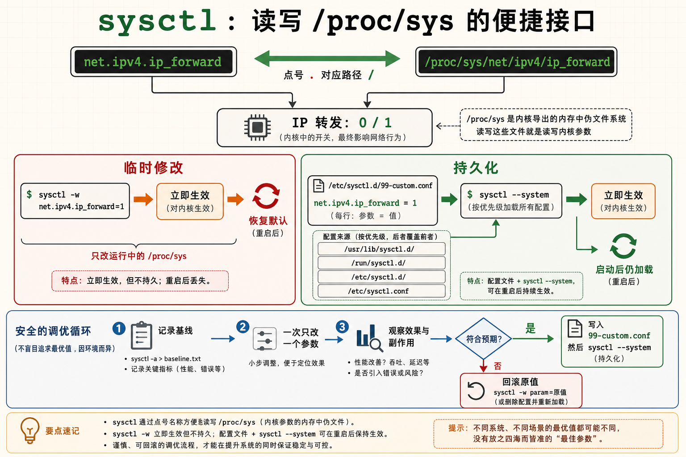

1内核与模块关系 — 单体但模块化的巨型程序
Linux 内核是单体架构——所有核心功能在同一个地址空间运行，但通过模块机制实现了灵活性
必知问题驱动：内核为什么需要模块？
如果你要把所有能想象到的硬件驱动——每一款网卡、每一款显卡、每一种文件系统、每一种网络协议——都编译进内核镜像，那么内核文件将膨胀到几百 MB。每次添加一个新硬件就要重新编译、重新安装、重新启动整个内核，这在实际运维中完全不可接受。内核模块（Kernel Module，.ko 文件）就是解决这个问题的机制——它们是可以在内核运行时动态加载和卸载的目标代码，不需要重启系统。
Linux 内核的设计哲学是：单体内核（Monolithic Kernel），但模块化。与微内核（Microkernel，如 MINIX、QNX）不同，Linux 的所有核心子系统——进程调度、内存管理、VFS、网络栈——都在同一个内核地址空间中运行，共享内存空间，通过函数调用（而非 IPC 消息传递）通信，因此性能更高。但通过内核模块，它获得了微内核才有的动态扩展能力。
模块的生命周期：从源码到运行
内核模块的完整生命周期分五步：
- 源码编写：C 语言编写，包含
module_init()和module_exit()两个入口 - 编译：使用内核的构建系统（Kbuild），输出
.ko（Kernel Object）文件 - 加载：通过
insmod或modprobe将 .ko 文件加载到内核地址空间。内核执行 module_init 函数进行初始化 - 运行：模块注册的功能（设备驱动、文件系统类型、网络协议等）开始工作
- 卸载：通过
rmmod或modprobe -r移除模块。内核执行 module_exit 函数清理资源，模块占用的内存被释放
模块存放位置
内核模块文件（.ko）存放在 /lib/modules/$(uname -r)/ 目录下，按功能分类到子目录中：
# 查看当前内核版本的模块目录
ls /lib/modules/$(uname -r)/
# 输出示例：
# build/ → 指向内核源码/头文件目录的符号链接（编译模块时需要）
# kernel/ → 模块的主体目录，按子系统分类
# ├── arch/ → 架构特定模块（CPU 微码、KVM 等）
# ├── drivers/ → 设备驱动（最大的分类）
# ├── fs/ → 文件系统模块（ext4, xfs, btrfs, nfs, cifs...）
# ├── net/ → 网络协议栈模块（tcp, nf_conntrack...）
# └── sound/ → 声卡驱动
# modules.alias → 模块别名（供 modprobe 按硬件 ID 自动匹配）
# modules.dep → 模块依赖关系表内核源码位置
内核头文件（编译模块时需要）通常位于：
- Debian/Ubuntu：
/usr/src/linux-headers-$(uname -r)/ - RHEL/CentOS：
/usr/src/kernels/$(uname -r)/ - 手动编译的内核：
/usr/src/linux/（源码树）和/lib/modules/$(uname -r)/build（符号链接指向源码树）
# 查看当前内核版本
uname -r
# 输出示例：5.15.0-91-generic
# 查看模块目录树的大小
du -sh /lib/modules/$(uname -r)
# 输出示例：350M /lib/modules/5.15.0-91-generic
# 统计模块数量
find /lib/modules/$(uname -r)/kernel -name "*.ko" | wc -l
# 查看内核头文件是否安装（编译模块必备）
ls /lib/modules/$(uname -r)/build/include/linux/version.h当你插入一个 USB 设备时，udev（用户空间设备管理器）会收到内核发出的 uevent，然后根据设备厂商 ID 和产品 ID 查询
/lib/modules/$(uname -r)/modules.alias 找到对应的模块名，调用 modprobe 自动加载。这就是为什么你插入 U 盘不需要手动运行任何命令——一切由 udev + modprobe 自动化完成。

2lsmod / modprobe — 模块管理的核心命令
管理员日常与内核模块打交道就靠这几个命令——查、装、卸、查
实操lsmod — 当前加载了哪些模块？
lsmod 输出当前内核中已加载的所有模块及其相互依赖关系。它的数据来源于 /proc/modules，用表格展示：模块名、内存占用大小、被哪些模块依赖。
# 列出所有已加载模块
lsmod
# 输出示例（三列）：
# Module Size Used by
# nf_conntrack 176128 1 nf_nat
# nf_nat 57344 1 iptable_nat
# nfsd 589824 13
# ext4 942080 2
# overlay 151552 1
# 解读：
# Size → 该模块占用的内存大小（字节）
# Used by → 后面跟着"依赖此模块的其他模块名"
# nf_conntrack 被 nf_nat 所依赖——必须先加载 nf_conntrack 才能加载 nf_nat
# 如果为 0 或一个数字（如 nfsd 的 13），表示没有其他模块依赖它，
# 但数字表示引用计数（有 13 个 NFS 连接在使用它）# 搜索特定模块（配合 grep）
lsmod | grep -E "ext4|xfs|btrfs"
# 列出各模块的大小（按大小排序）
lsmod | sort -k2 -rn | head -20
# 查看模块信息的底层手段：直接读 /proc/modules
cat /proc/modules | head -5modinfo — 模块的说明书
modinfo 读取模块 .ko 文件内部嵌入的详细信息——版本、作者、描述、所支持的设备和参数。
# 查看 ext4 模块的详细信息
modinfo ext4
# 输出示例（节选）：
# filename: /lib/modules/5.15.0-91-generic/kernel/fs/ext4/ext4.ko
# description: Fourth Extended Filesystem
# author: Remy Card, Stephen Tweedie, ...
# license: GPL
# depends: mbcache, jbd2 ← 依赖哪些模块（加载前必须先加载它们）
# parm: num_frontend_wq:Number of front-end workqueues (uint)
# parm: no_journal:Disable ext4 journaling - not recommended (bool)
# 查看模块版本和许可证
modinfo -F version ext4
modinfo -F license ext4
# 查看模块有哪些可配置参数
modinfo -F parm ext4modprobe — 智能加载与卸载（推荐）
modprobe 是加载/卸载内核模块的推荐工具，因为它会自动解析并加载依赖模块。它通过读取 /lib/modules/$(uname -r)/modules.dep 了解依赖关系。例如，你要加载 vfat 模块，modprobe 会自动先加载 fat 模块（vfat 依赖 fat）。
# 加载模块（自动处理依赖）
sudo modprobe vfat
# 验证是否加载成功
lsmod | grep vfat
# 输出应包含 vfat 和 fat 两个模块
# 卸载模块（自动处理依赖——前提是没有其他模块依赖它）
sudo modprobe -r vfat
# 加载模块并传入参数
sudo modprobe zram num_devices=4
# 查看模块依赖关系
modprobe --show-depends ext4
# 输出：
# insmod /lib/modules/.../kernel/fs/mbcache.ko
# insmod /lib/modules/.../kernel/fs/jbd2/jbd2.ko
# insmod /lib/modules/.../kernel/fs/ext4/ext4.ko
# 说明 ext4 依赖 mbcache 和 jbd2，加载顺序由 modprobe 保证insmod / rmmod — 原始工具（不处理依赖）
insmod 直接加载一个 .ko 文件到内核——不检查依赖、不解析别名。rmmod 卸载模块。这两个命令更底层，通常在开发调试模块时使用。
# insmod 需要指定 .ko 文件的完整路径
sudo insmod /path/to/my_driver.ko
# 传入参数
sudo insmod /path/to/my_driver.ko debug=1
# rmmod 卸载模块
sudo rmmod my_driver
# 强制卸载（即使模块被其他模块引用——危险操作！）
sudo rmmod -f my_driver强制加载/屏蔽模块
# === 场景：系统错误地加载了错误的网卡驱动，需要屏蔽它 ===
# 1. 创建黑名单文件
sudo tee /etc/modprobe.d/blacklist-custom.conf << 'EOF'
# 屏蔽 nouveau 驱动（NVIDIA 开源驱动，通常在安装 NVIDIA 官方驱动时需要）
blacklist nouveau
# 屏蔽某个有问题的模块
blacklist faulty_module
EOF
# 2. 更新 initramfs（以便启动时也不加载该模块）
sudo update-initramfs -u # Debian/Ubuntu
sudo dracut -f # RHEL/CentOS/Fedora
# 3. 重启后验证该模块未被加载
lsmod | grep nouveau # 应该没有输出
# === 强制加载模块（即使模块不在黑名单中） ===
# 编辑 /etc/modules-load.d/custom.conf
sudo tee /etc/modules-load.d/custom.conf << 'EOF'
# 启动时强制加载这些模块
loop
vhost_net
EOFmodprobe 按模块名加载（如 ext4），自动解析依赖，从标准模块目录加载。insmod 按文件路径加载（如 /path/to/mod.ko），不解析依赖，需要你自己确保所有依赖模块已加载。
3sysctl 内核参数调优 — 不停机调整系统行为
内核暴露了数百个可调参数，sysctl 让你在运行时调整内核行为——不需要重新编译
核心sysctl 的工作原理
Linux 内核在运行时会暴露大量可配置参数——这些参数存储在 /proc/sys/ 虚拟文件系统中。sysctl 命令就是读写这些参数的便捷接口。修改即时生效（不需要重启），但如果不在配置文件中持久化，重启后参数会恢复默认值。持久化配置文件是 /etc/sysctl.conf（系统级）和 /etc/sysctl.d/*.conf（模块化配置）。
# 查看所有当前生效的内核参数
sysctl -a | head -30
# 输出中有数千行——几乎每个内核子系统都有可调参数
# 查看某个参数
sysctl net.ipv4.ip_forward
# 输出：net.ipv4.ip_forward = 0
# 临时修改一个参数（即时生效）
sudo sysctl -w net.ipv4.ip_forward=1
# 从配置文件加载所有参数
sudo sysctl -p
# 从指定配置文件加载
sudo sysctl -p /etc/sysctl.d/99-custom.conf
# 查看 sysctl 参数对应的 procfs 路径
# sysctl 中的 "." 对应 procfs 路径中的 "/"
# 例如 net.ipv4.ip_forward → /proc/sys/net/ipv4/ip_forward关键内核参数详解
net.ipv4.ip_forward
IP 包转发开关。值为 0 时该主机仅作为普通主机（不转发非本地数据包）；值为 1 时内核将转发目的地址不是本机的 IP 包——变成路由器。
sudo sysctl -w net.ipv4.ip_forward=1
用途：NAT 网关、VPN 服务器、Docker 容器互通。
vm.swappiness
控制匿名页与文件页回收的相对倾向。常见配置在 0–100 之间，新内核还允许更高的值；低值不是“永不使用 swap”，实际交换行为仍取决于内存压力与工作负载。
sudo sysctl -w vm.swappiness=10
数据库服务器不要照抄单一推荐值；先观察交换活动、文件缓存命中和响应延迟，再在测试环境调整并记录前后指标。
fs.file-max
系统级文件句柄上限。它不同于进程的 ulimit -n 与 systemd 的 LimitNOFILE；即使提高此值，单个服务也可能先碰到自身限制。
sudo sysctl -w fs.file-max=2097152
高并发 Web/数据库服务器需要调大此值。查看当前使用量：cat /proc/sys/fs/file-nr。
net.core.somaxconn
监听套接字的 accept 队列上限，控制已完成握手、等待应用接收的连接数量；SYN 半连接队列由其他参数管理。默认值依内核和发行版而异。
sudo sysctl -w net.core.somaxconn=1024
应用传给 listen() 的 backlog 还会受此值截断。先观察连接队列溢出与应用处理能力，再决定是否同时调整应用和内核配置。
kernel.pid_max
PID 分配的数值上界，默认值依内核与发行版而异；它不等于可同时运行的进程数，后者还受内存、threads-max 和 cgroup PID 限制约束。
cat /proc/sys/kernel/pid_max
大量进程或线程启动失败时，先检查 pids.current、pids.max 与系统线程限制，而不是直接调高 PID 数值上界。
net.netfilter.nf_conntrack_max
连接跟踪表的最大条目数。当连接跟踪表满时，新连接将被丢弃。
sudo sysctl -w net.netfilter.nf_conntrack_max=262144
高并发 NAT 网关/防火墙的关键参数，调大后需要同时考虑内存消耗。
sysctl.conf 持久化配置

# 编辑主配置文件
sudo vi /etc/sysctl.conf
# 或使用模块化配置（推荐，不污染主文件）
sudo tee /etc/sysctl.d/99-server-tuning.conf << 'EOF'
# === 网络调优 ===
net.ipv4.ip_forward = 1
net.core.somaxconn = 1024
net.core.netdev_max_backlog = 5000
# === 内存调优 ===
vm.swappiness = 10
vm.vfs_cache_pressure = 50
# === 文件句柄 ===
fs.file-max = 2097152
# === 安全 ===
net.ipv4.tcp_syncookies = 1
net.ipv4.conf.all.rp_filter = 1
net.ipv4.conf.default.rp_filter = 1
EOF
# 立即应用配置
sudo sysctl --system
# --system 比 -p 更全面，它会加载：
# /etc/sysctl.d/*.conf
# /run/sysctl.d/*.conf
# /usr/lib/sysctl.d/*.conf
# /etc/sysctl.confsysctl -w 修改的参数立即生效但重启后丢失。写到 /etc/sysctl.d/*.conf 后运行 sysctl --system 才能持久化。很多运维事故就是在服务器正常运行了一年后重启，发现原来的内核参数都丢了。4procfs 与 sysfs — 窥探内核的窗口
内核并不读配置文件——它通过伪文件系统向用户空间暴露运行状态和控制接口
必知伪文件系统：看起来像文件，读的是内核数据
/proc 和 /sys 是两种特殊的伪文件系统（pseudo filesystem）——它们不存储在任何物理磁盘上，而是内核在内存中动态生成的。当你 cat /proc/cpuinfo 时，看起来在读一个文件，实际上内核在那一刻实时生成了这些内容。它们是与内核通信的实时窗口。
/proc — 进程和内核信息
/proc 文件系统同时提供两方面的信息：以进程 ID 命名的子目录（每个进程一个目录），以及内核级别的全局信息文件。
# === 进程信息 ===
# 查看 PID 1（通常是 systemd 或 init）的详细信息
ls /proc/1/
# 输出：attr/ cmdline cwd/ environ exe fd/ limits maps mem mounts net/ root/ stat status task/
# cmdline → 进程启动时的完整命令行
# environ → 进程的环境变量（每个变量以 \0 分隔）
# fd/ → 进程打开的所有文件描述符（ls -l 可看到指向/符号链接）
# limits → 进程的资源限制
# status → 进程状态（比 ps 更详细）
# 查看某进程的命令行
cat /proc/1/cmdline | tr '\0' ' '
# === 硬件与系统信息 ===
cat /proc/cpuinfo # CPU 型号、频率、核心数、缓存大小
cat /proc/meminfo # 内存使用详细统计
cat /proc/version # 内核版本和编译信息
cat /proc/uptime # 系统运行时间（秒）和空闲时间（秒）
cat /proc/loadavg # 系统负载（1分钟、5分钟、15分钟）▶ /proc/meminfo 部分输出解读
MemTotal: 16384000 kB # 物理内存总量
MemFree: 2048000 kB # 完全空闲的内存
MemAvailable: 8192000 kB # 可用于新进程的内存（包括可回收的缓存）
Buffers: 512000 kB # 块设备缓冲区
Cached: 6144000 kB # 页缓存（读取过的文件缓存在此）
SwapTotal: 8388608 kB # Swap 总量
SwapFree: 8388608 kB # Swap 空闲量
# 关键判断：如果 MemAvailable 经常很低，系统可能已经面临内存压力/proc/sys — sysctl 参数的底层路径
/proc/sys 是 sysctl 命令所读写的底层。每个 sysctl 参数在 /proc/sys/ 下都有一个对应的文件：
# 查看 IP 转发当前状态（等效于 sysctl net.ipv4.ip_forward）
cat /proc/sys/net/ipv4/ip_forward
# 临时修改（等效于 sysctl -w net.ipv4.ip_forward=1）
echo 1 | sudo tee /proc/sys/net/ipv4/ip_forward
# 查看可打开的最大文件数
cat /proc/sys/fs/file-max
# 查看当前已打开的文件数（三列：已分配 / 空闲 / 上限）
cat /proc/sys/fs/file-nr/proc 中的网络信息
cat /proc/net/tcp # 所有 TCP 连接的状态（十六进制格式）
cat /proc/net/udp # UDP 连接
cat /proc/net/dev # 网络接口的收发统计（字节数/包数/错误数）
cat /proc/net/arp # ARP 缓存表/sys — 设备和驱动信息
/sys（sysfs）比 /proc 更新（Linux 2.6 引入），专门用于暴露内核对象（kobject）的结构化信息——主要是设备、驱动、总线。
# 查看磁盘 /dev/sda 的属性
ls /sys/block/sda/
# 输出：alignment_offset bdi/ capability dev device/ events_async...
# size → 磁盘扇区总数（512 字节扇区）
# stat → 磁盘 IO 统计
# 读磁盘大小（单位：512 字节扇区）
cat /sys/block/sda/size
# 磁盘是否可移除
cat /sys/block/sda/removable
# 0 = 固定磁盘，1 = 可移动（U盘/SD卡）
# 网络接口的速度和状态
cat /sys/class/net/eth0/speed # 连接速率（Mbps）
cat /sys/class/net/eth0/operstate # 接口状态（up/down）
cat /sys/class/net/eth0/address # MAC 地址/proc 是杂货铺——进程信息、内核统计、系统参数混在一起。/sys 是正规仓库——严格按"设备 / 驱动 / 总线 / 类"分类，每个文件只包含一个值。在现代 Linux 中，/sys 是访问设备信息的推荐接口。实战：动态调整内核参数模拟故障
# 模拟内存紧张：提高 swap 压力，迫使内核尽早换出内存
sudo sysctl -w vm.swappiness=100
# 执行 cat /proc/meminfo 观察 SwapFree 变化
# 开启 IP 转发（将本机变成路由器）
sudo sysctl -w net.ipv4.ip_forward=1
cat /proc/sys/net/ipv4/ip_forward # 验证：返回 1
# 禁用 IPv6（如果有不需要的场景）
sudo sysctl -w net.ipv6.conf.all.disable_ipv6=1
# 恢复默认：只需重启，或手动改回默认值
sudo sysctl -w vm.swappiness=60
sudo sysctl -w net.ipv4.ip_forward=0注解
DB · Database 数据库
IPC · Inter-Process Communication 进程间通信
NAT · Network Address Translation 网络地址转换
VM · Virtual Machine 虚拟机
VPN · Virtual Private Network 虚拟专用网络